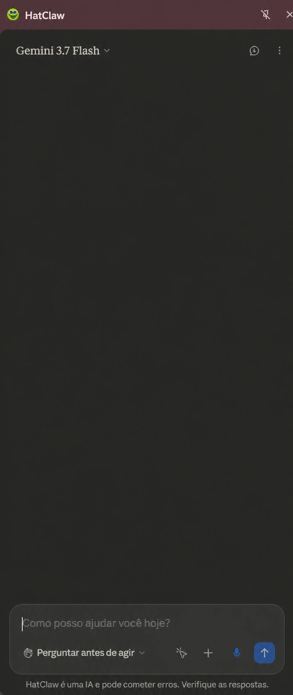
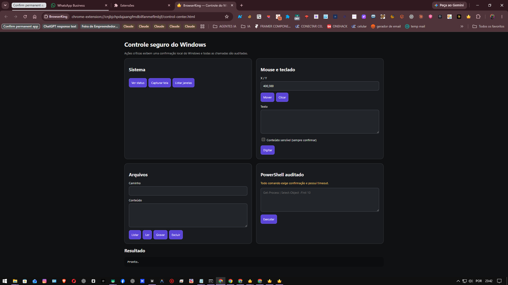

Entende a tela
Captura a página, identifica textos, botões, campos e o contexto da tarefa.
Transforme qualquer IA compatível em um agente capaz de enxergar páginas, tomar decisões e executar tarefas no navegador — com uma extensão aberta, local e sob seu controle.
20+ provedores de IA
Uma única interface. Zero mensalidade.

HATCLAW EM AÇÃOCHROME + ANDROID
O HatClaw cria uma ponte segura entre o modelo de IA escolhido e a interface na sua frente. Você acompanha cada etapa e mantém o controle.
Captura a página, identifica textos, botões, campos e o contexto da tarefa.
O modelo avalia os próximos passos e escolhe as ferramentas necessárias.
Clica, digita, navega e apresenta o resultado para você revisar.
O HatClaw conecta modelos de IA às ferramentas que você já usa — com controle, visibilidade e liberdade de escolha.
A IA enxerga a página, interpreta interfaces e age como você: clica, digita, navega e entrega o resultado.
Use OpenAI, Gemini, Anthropic, Grok, modelos locais ou qualquer endpoint compatível.
Combine especialistas com personas e memórias próprias. Um coordenador consolida as decisões.
Registre fluxos, reproduza tarefas e exporte gravações. Menos repetição, mais trabalho concluído.
Peça para o agente localizar informações, organizar critérios e devolver uma resposta objetiva.
Preencha campos, navegue por sistemas e reproduza fluxos com acompanhamento visual.
Distribua a análise entre agentes com papéis próprios e receba uma conclusão consolidada.

PAINEL DE CONTROLEAmplie o alcance do agente com o controlador opcional para Windows e a build Android baseada no serviço de acessibilidade — sempre com permissões explícitas.
Operações sensíveis exigem confirmação local.
Acompanhe o que o agente faz, em tempo real.
As credenciais configuradas na extensão permanecem no armazenamento do navegador.
EXTENSÃO PARA NAVEGADOR
Experiência principal do HatClaw: automação visual, múltiplos provedores, workflows e agentes especializados no Chrome.
APP PARA CELULAR
Build experimental para testar ações locais no aparelho por meio do serviço de acessibilidade do Android.
O APK é uma build de desenvolvimento para testes e não representa uma versão publicada na Play Store.
Salve a pasta em um local permanente no computador.
Ative o “Modo do desenvolvedor” no canto superior.
Selecione a pasta extraída, abra o HatClaw e adicione sua chave de IA.
Autorize a instalação pelo navegador ou gerenciador de arquivos.
O Android pode solicitar confirmação para apps fora da Play Store.
Siga o atalho exibido no app e habilite o serviço HatClaw.
Comece com o essencial e evolua quando sua operação exigir mais automação, agentes e controle.
Use todos os recursos por 1 hora. Ao expirar, a extensão é bloqueada automaticamente.
R$49,90/mês para workflows, múltiplos agentes e economia automática.
Plano sob medida para equipes que automatizam juntas.
A utilização depende de licença válida quando esse requisito estiver habilitado no plano. O consumo de APIs e modelos de IA pode ser cobrado separadamente pelo provedor escolhido.
Respostas diretas sobre instalação, modelos de IA, privacidade e o estágio atual do aplicativo Android.
Não. A extensão não exige cadastro próprio. Você configura a chave do provedor de IA que deseja usar ou conecta um endpoint local compatível.
O HatClaw oferece suporte a provedores como OpenAI, Anthropic, Google, xAI, DeepSeek, Mistral, Groq e endpoints compatíveis com a API da OpenAI. A qualidade da automação depende da capacidade de visão e uso de ferramentas do modelo escolhido.
Esta distribuição é feita por ZIP e usa o modo de desenvolvedor do Chrome. Extraia o arquivo, abra chrome://extensions e selecione “Carregar sem compactação”.
Ainda não. O arquivo disponível é uma build de desenvolvimento destinada a testes da automação local via acessibilidade.
As configurações da extensão são mantidas no armazenamento local do navegador. Como o projeto é aberto, você também pode revisar a implementação antes de inserir credenciais.
Comece pela extensão para Chrome ou explore o código do projeto antes de instalar.